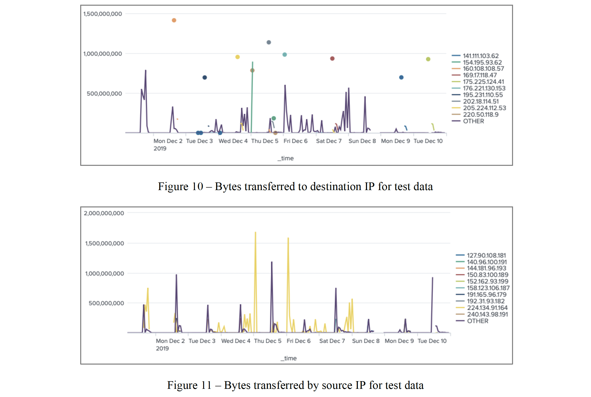
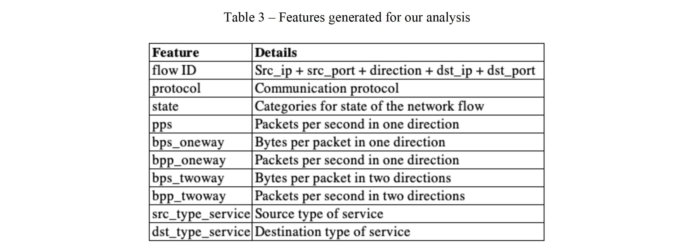
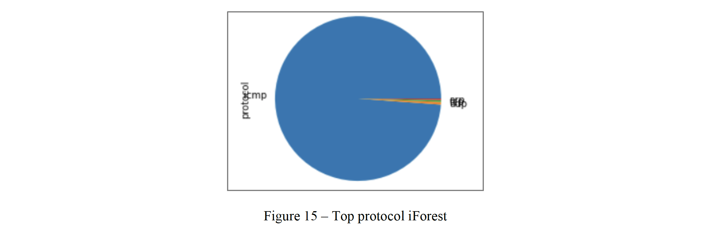

Machine learning based cyberattack detection
There were two tasks in this project: Task I aimed to develop our skills in applying unsupervised machine learning techniques for anomaly detection; and Task II helped us to better understand how to use gradient descent-based method to generate adversarial samples against supervised learning models beyond the computer vision domain. Specifically, two network traffic (NetFlow) datasets were provided, one for each task. Both datasets contained botnet traffic and normal traffic. We identified botnet IP addresses from both datasets. In addition, for Task II we also chose a botnet IP address, and explained how to manipulate its network traffic in order to bypass detection.
A full version of our report can be found here: Report. If you want to check the code, you can go here: Code.
Data was ingested into Splunk for having an overview of IPs interactions and bytes transferred, as it can be seen in the following graphs:
Then, the following features were extracted for analysis:
Once the features were extracted, we used iForest and LOF models to perform the anomaly detection task in three scenarios: with all the features, using Principal Components Analysis and using Variance Threshold. After running the experiments, it was found that iForest worked better as LOF tended to capture much more noise. We consider for the iForest model to be the more accurate as it produces a reduced amount of src_ip and dst_ip, and contains all the top conversations, src_ip and dst_ip from our overview analysis. A list of 79 attackers and 101 victims was found. 27,174 records were tagged as anomalous, and the majority of the attacks were considered as ICMP based DDoS, which started at 2:48:22 PM and ended by 6:51:44 PM on 10/12/2012.
